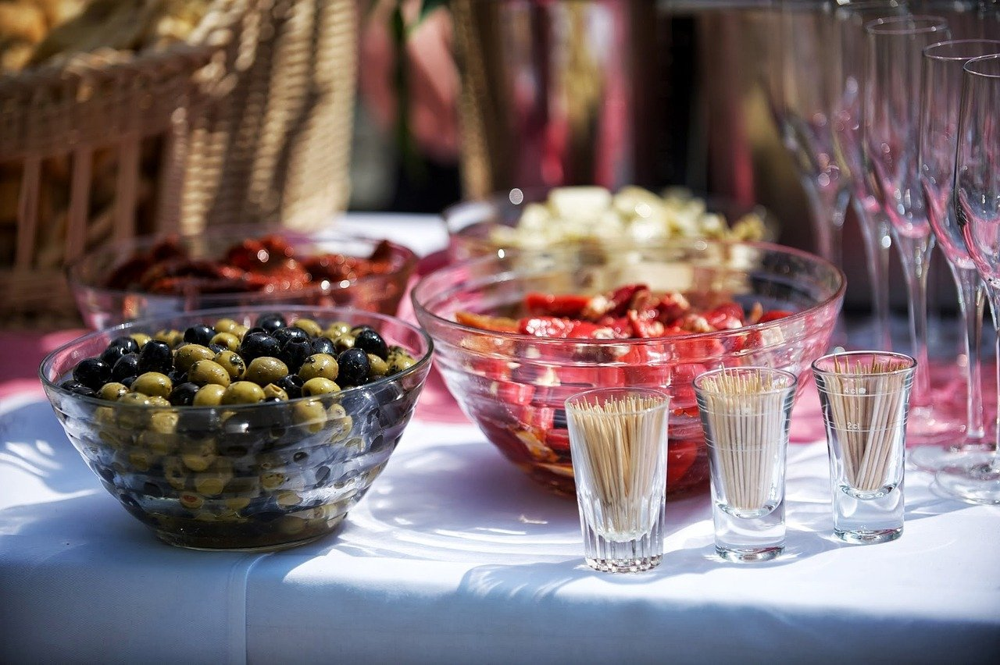
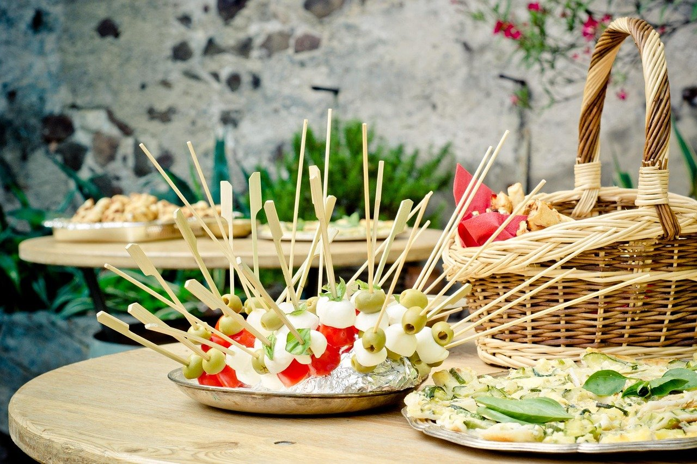
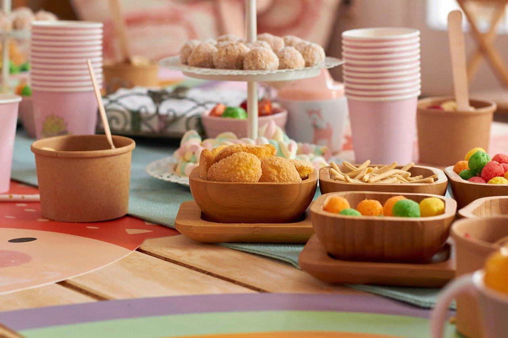
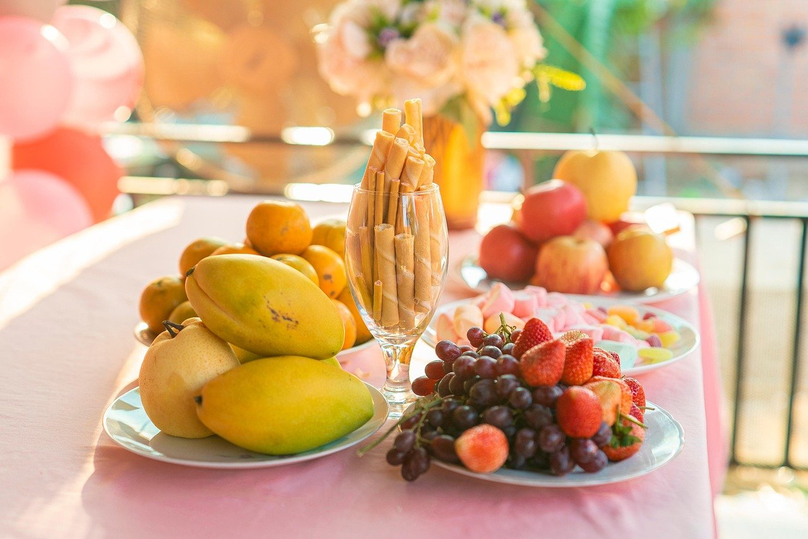

Bufet în Piața Muzeului, Cluj-Napoca
No Name
Bufet pentru petreceri cu prietenii

Bufet pentru aniversări, în Piața Muzeului
No Name are bufet pentru aniversări și evenimente private. Ne găsești în Piața Muzeului, în centrul Clujului.
Vii cu prietenii, cu colegii sau cu familia, iar bufetul se pune pentru tot grupul. Sărbătoriți împreună, la aceeași masă.
-
Pentru grupuri
Bufetul e gândit pentru grupuri care sărbătoresc împreună.
-
Central
Piața Muzeului, în centrul orașului Cluj-Napoca.
-
Petreceri
Bufet pentru aniversări și evenimente private.
Servicii
Bufetul se pregătește pentru grupul tău. Ne suni, ne spui ocazia, data și câți veniți, iar detaliile le stabilim la telefon.
-
Bufet pentru aniversări
Ziua ta sau a cuiva din gașcă, sărbătorită cu bufet pentru toți invitații.
-
Bufet pentru evenimente private
De la o reuniune de colegi la o petrecere de plecare, bufetul se face pentru evenimentul vostru.
Bufet de petrecere
Fotografii ilustrative



Sună pentru bufet
Sună la No Name și spune-ne data, ocazia și câte persoane vin.
0745 005 965 Piața Muzeului, Cluj-NapocaNo Name, bufet pentru aniversări și evenimente private